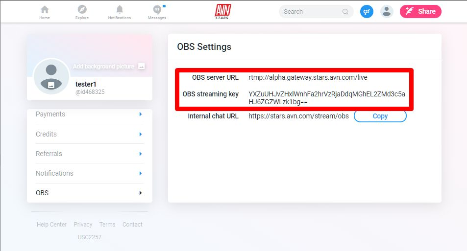
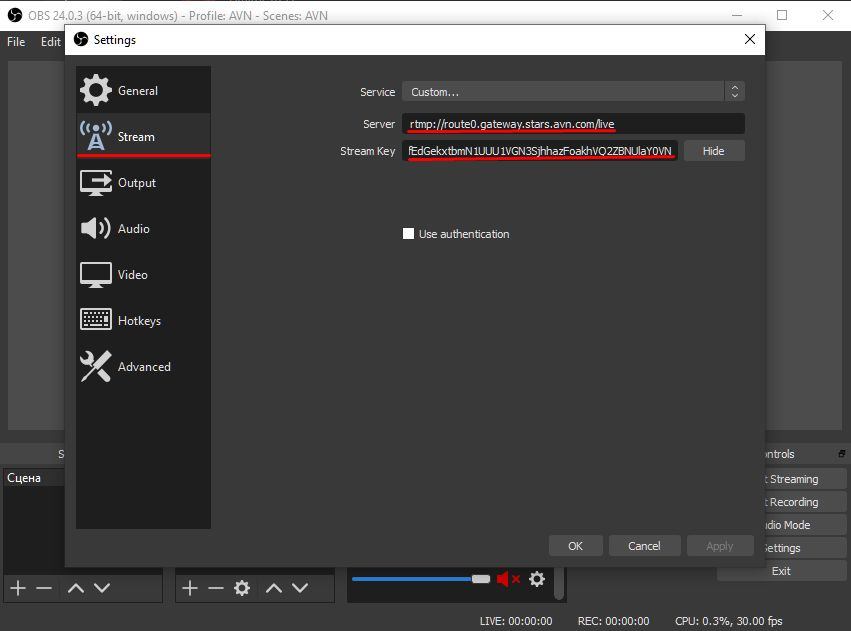
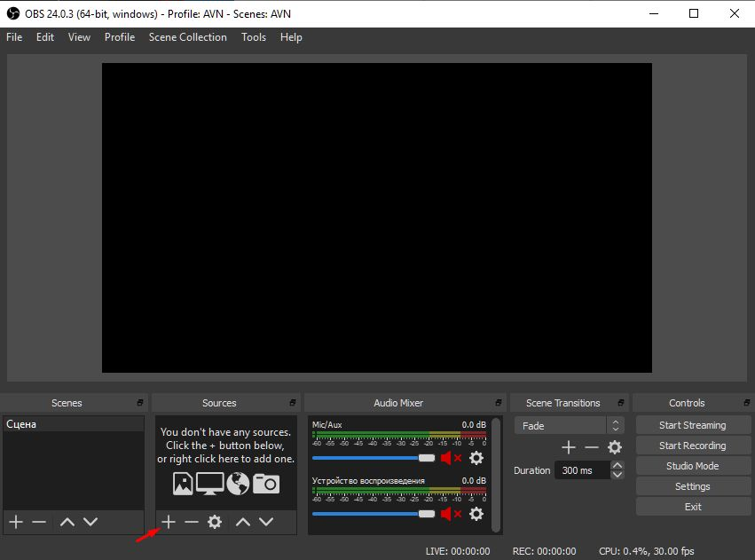
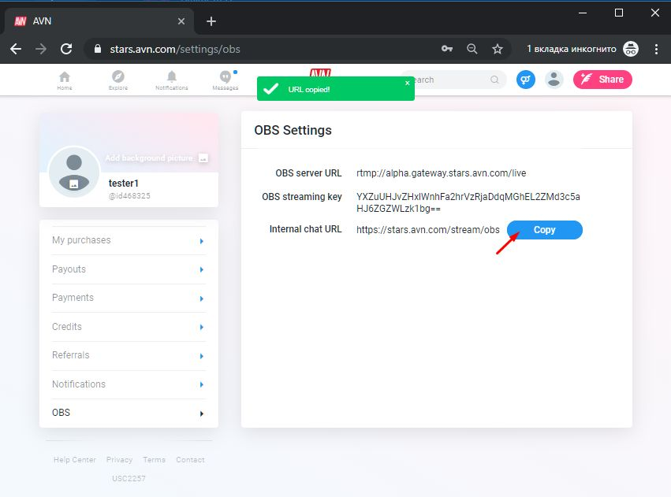
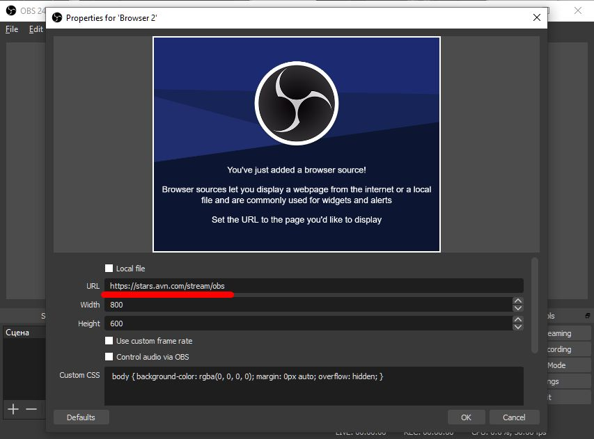
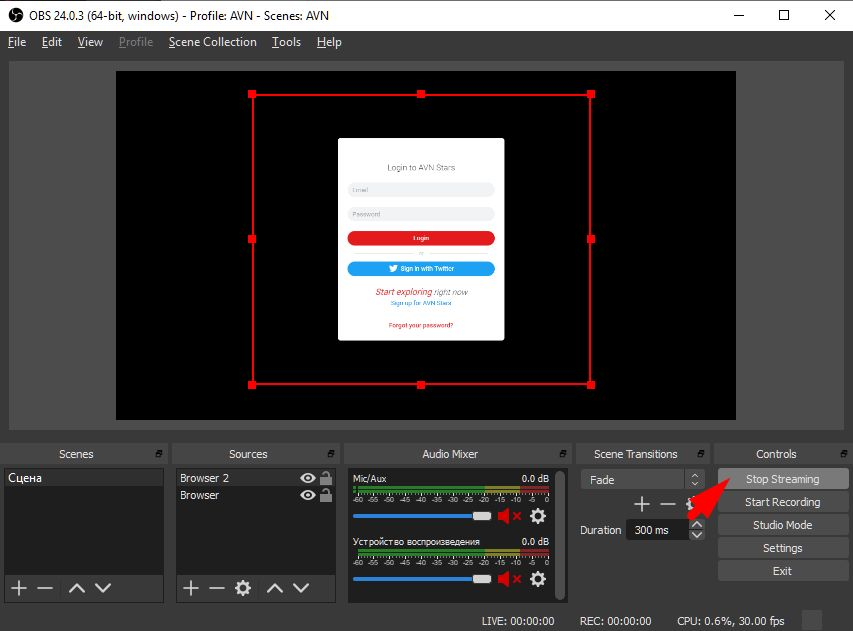
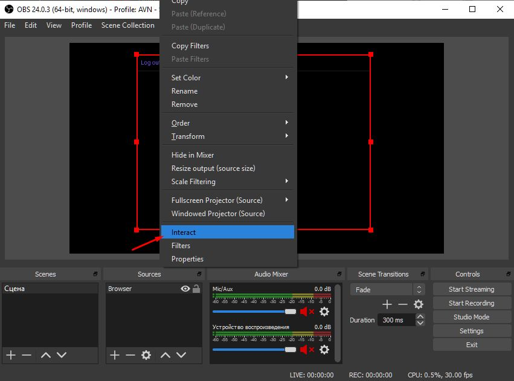
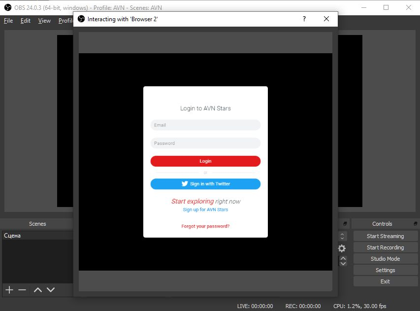
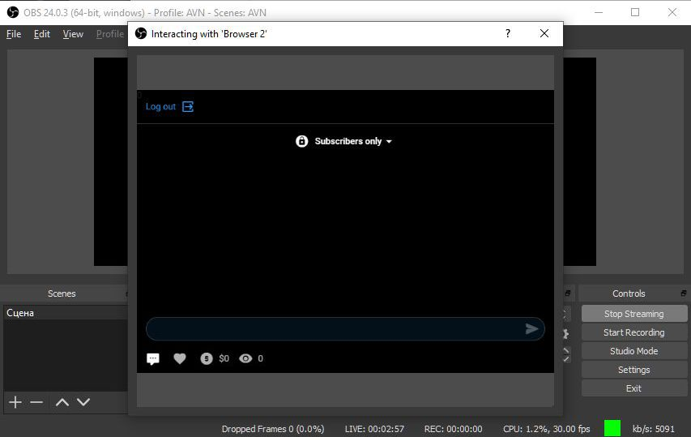

Open Settings/OBS section on site. Copy OBS server URL and OBS streaming key to OBS Studio Settings
Paste it into OBS Settings/Stream section
Add Browser Source
Choose Browser type and Unmark "Make source visible" checkbox
Setup Browser Source for managing chat inside OBS program
 Login to site & interact with chat
 Add your own sources
For streaming from your webcam use Video Capture Device source
Start Stream & then open stream chat inside of OBS Studio
 